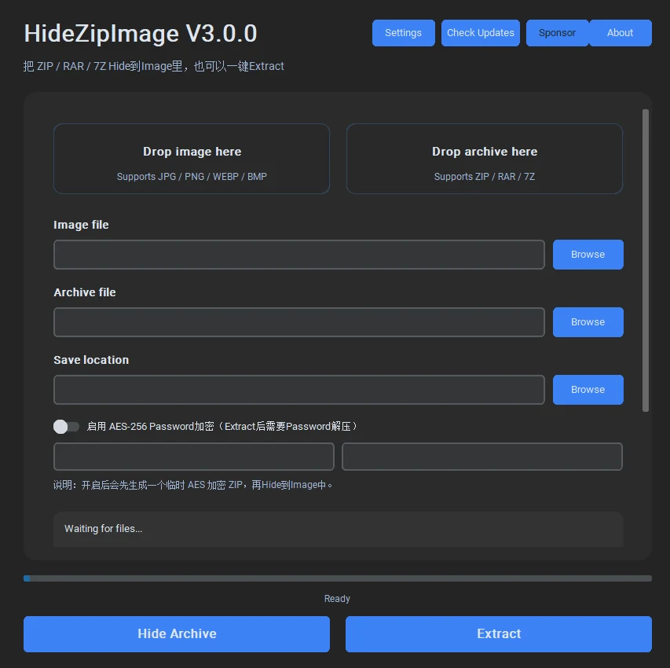

PROJECT 01 — DESKTOP TOOL
藏图 HIDE-ZIP IMAGE
把一个压缩包藏进一张图片里：图片照常打开，看不出异样；需要的时候，再把包原样取出来。

它做什么
选一张图片、选一个压缩包、设一个密码，导出。图片在资源管理器里仍然是图片，能预览、能发群、能传网盘。想取出时，把图拖回程序，输入密码，压缩包完整还原。
支持 ZIP / RAR / 7Z，可以批量处理，可以验证「是否真的藏进去了」，有导出日志和更新检查。加密用 AES-256，密码不上传，也不存在任何地方。
怎么做的
界面是 customtkinter，拖放靠 tkinterdnd2，加密用 pyzipper，图像处理用 Pillow。导出前先压缩并加密，把密文追加到图片末尾，再在文件尾部写一段索引：偏移、长度、原文件名、校验值。提取时读索引、解密、按原路径还原。
整个流程不碰图片本身的像素，所以预览不会花，颜色不会变。代价是文件体积会变大，导出时会明确告诉你多了多少。
图片还是图片，只是多了一点你看不见的重量。
踩过的坑
- 有些看图软件会「另存为」，重写文件，藏在后面的数据就没了。所以提取前先校验索引，失败就明确报错，不去猜。
- 大文件复制很慢，进度条必须是真的，不能拿动画糊弄人。
- Windows 会缓存缩略图，替换图片之后要主动刷新，否则看起来像没成功。
安装包用 Inno Setup 打。卸载时只删程序，不动用户藏过的图——这一点写在安装向导里。